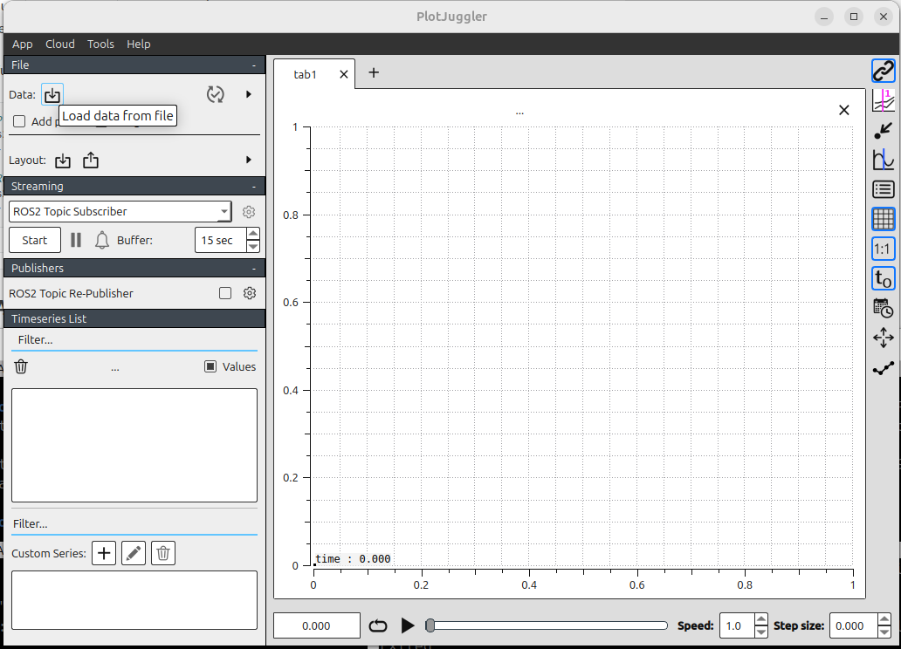
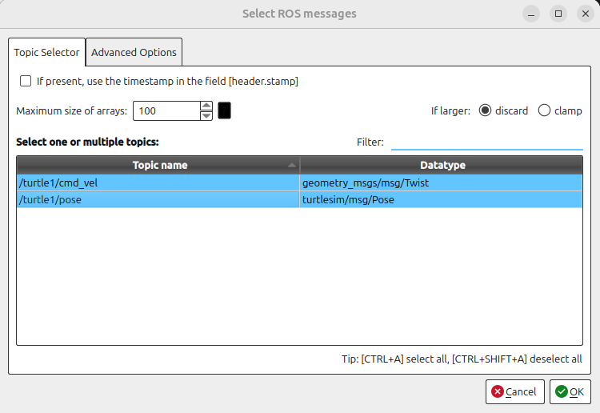
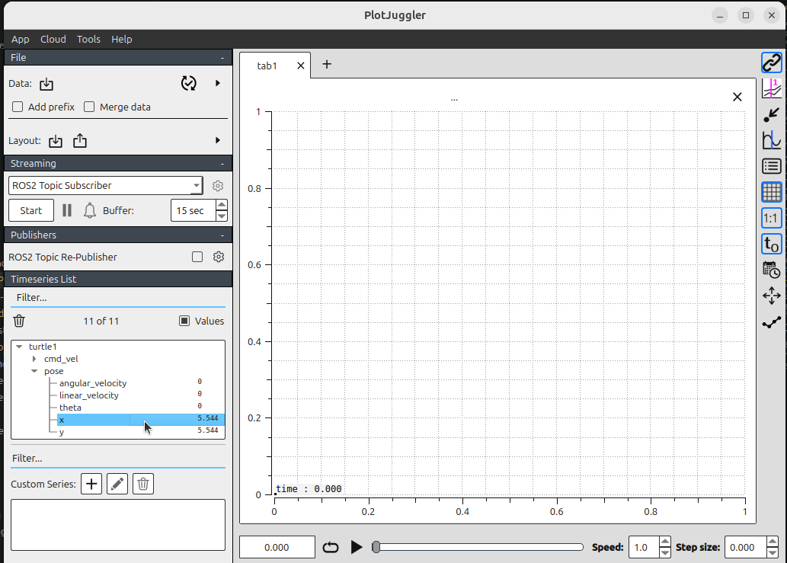

ROS 2 bags and PlotJuggler
1. Introduction
A ROS 2 bag stores timestamped messages published on ROS topics. You can use a bag to repeat an experiment, inspect what happened, or analyze signals without running the original system again.
In this exercise, you will:
Record commands and poses from Turtlesim.
Inspect and replay the recording with
ros2 bag.Load the same bag into PlotJuggler and plot the recorded values.
2. Requirements
This exercise continues from ROS 2 CLI and Turtlesim. Install the required packages if they are not already available:
sudo apt update
sudo apt install ros-$ROS_DISTRO-turtlesim \
ros-$ROS_DISTRO-rosbag2 \
ros-$ROS_DISTRO-plotjuggler-ros
Source ROS 2 in every new terminal:
source /opt/ros/$ROS_DISTRO/setup.bash
3. Start Turtlesim
Start the simulator in the first terminal:
ros2 run turtlesim turtlesim_node
Start keyboard teleoperation in a second terminal:
ros2 run turtlesim turtle_teleop_key
Select the teleoperation terminal and verify that the arrow keys move the turtle.
4. Record a bag
For this example, record two topics:
/turtle1/cmd_velcontains the velocity commands sent to the turtle./turtle1/posecontains the resulting position, orientation, and velocity.
In a third terminal, create a directory for the recordings and start recording:
mkdir -p ~/dev_ws/bags
cd ~/dev_ws/bags
ros2 bag record -o turtlesim_bag --topics \
/turtle1/cmd_vel /turtle1/pose
Move the turtle for approximately 15 seconds. Include straight segments and
turns so that the plots contain varied data. Return to the recording terminal
and press Ctrl+C to stop.
The output name must be unique. If turtlesim_bag already exists, choose a new
name such as turtlesim_bag_02.
4.1 What was created?
The command creates a bag directory rather than a single file:
turtlesim_bag/
├── metadata.yaml
└── turtlesim_bag_0.mcap
Depending on the configured storage plugin, the data file may use another
extension, such as .db3. The metadata.yaml file describes the storage
format, topics, message types, duration, and message counts.
5. Inspect the bag
Display a summary of the recording:
ros2 bag info ~/dev_ws/bags/turtlesim_bag
Check that both topics are listed and that each has a nonzero message count. The pose topic normally contains more messages because Turtlesim publishes it continuously, while the command topic is published when teleoperation sends a command.
6. Replay the movement
Keep the simulator running, but stop the keyboard teleoperation node with
Ctrl+C so that it does not publish commands during playback. Reset the turtle
to its initial state:
ros2 service call /reset std_srvs/srv/Empty "{}"
Replay only the command topic:
ros2 bag play ~/dev_ws/bags/turtlesim_bag \
--topics /turtle1/cmd_vel
The turtle should repeat approximately the same motion. Only the command topic
is replayed because /turtle1/pose is an observation, not a command. Replaying
the recorded pose would not move Turtlesim and would create a second publisher
for the topic while the simulator is running.
Useful playback options include:
# Play at half speed
ros2 bag play ~/dev_ws/bags/turtlesim_bag \
--topics /turtle1/cmd_vel --rate 0.5
# Repeat until Ctrl+C is pressed
ros2 bag play ~/dev_ws/bags/turtlesim_bag \
--topics /turtle1/cmd_vel --loop
Use ros2 bag play --help to see all options supported by your ROS 2 version.
7. Analyze the bag with PlotJuggler
PlotJuggler turns numeric fields from recorded messages into time series. It can read the bag directly, so Turtlesim does not need to be running and you do not need to play the bag first.
7.1 Start PlotJuggler
Launch PlotJuggler from a terminal in which ROS 2 is sourced:
sudo apt install ros-jazzy-plotjuggler-ros
ros2 run plotjuggler plotjuggler
The plotjuggler-ros package supplies the ROS 2 bag loader and message parser.
7.2 Load the recording
Select Open data file in PlotJuggler.

Open
~/dev_ws/bags/turtlesim_bag/metadata.yaml. Selectmetadata.yaml, rather than the.mcapor.db3storage file, when using the ROS 2 bag loader. The loader reads the metadata to locate the storage file and determine its format.In the topic-selection dialog, select
/turtle1/cmd_veland/turtle1/pose, then accept the selection.
Wait for the bag to load. The decoded numeric fields appear in the curve list on the left. You can then drag & drop the field to the grid.

7.3 Create useful plots
Drag fields from the curve list onto a plot area. Depending on the PlotJuggler version, field names may use dots or slashes as separators. Look for these message paths:
/turtle1/pose/xand/turtle1/pose/y: position on the Turtlesim canvas./turtle1/pose/theta: orientation in radians./turtle1/pose/linear_velocityand/turtle1/pose/angular_velocity: measured motion./turtle1/cmd_vel/linear/x: commanded forward velocity./turtle1/cmd_vel/angular/z: commanded angular velocity.
Suggested layout:
Plot pose
xandytogether to compare how the position changes.Plot
thetain a separate panel because it uses radians.Plot commanded
linear/xwith measuredlinear_velocity.Plot commanded
angular/zwith measuredangular_velocity.
Use the time slider, zoom controls, and tracker to inspect individual events. Notice how changes in the command signals correspond to changes in the pose and measured velocity.